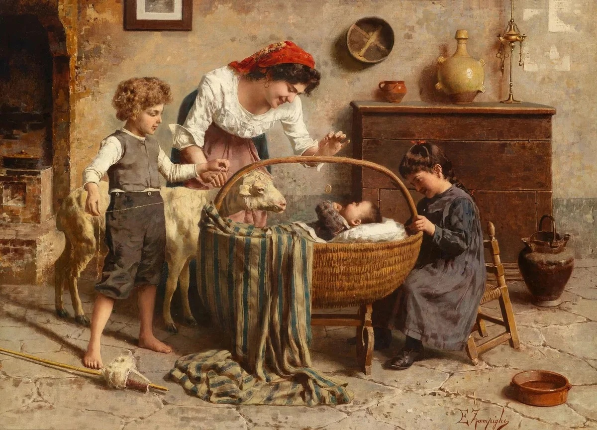

Etre parents, c'est une histoire de désir, d'amour, d'envies partagées...
Mais c'est aussi une aventure riche en bouleversements qui nous reconnecte à nos propres racines.
Depuis l'antiquité, la mère a consacré plus de temps à l'enfant, que le père. La mère était toujours à la maison, faisait tout le ménage et élevait les enfants, et le père à ce temps chassait, travaillait dans la ville, assurait la famille.
L'enfant recevait toujours plus d’affection maternel. Malgré le 21-ème siècle avec des vols dans l'espace, notre conscience est remplie de stéréotypes de genre.
La plupart des hommes sont adeptes de la charte domestique ancienne et attribuent toujours à la femme le rôle d'une femme au foyer, d'une mère qui s'occupe des enfants et d'une humble épouse obéissante qui ne discute pas avec son mari et souffre de ses lacunes pour sauver la famille.
Question : Comment les tâches ménagères dans votre maison, sont-elles partagées?
@camilledugout: Moi, je fais tout dans NOTRE maison! Après le travail, je suis obligée de m’occuper du repas, du nettoyage, du lavage et de la surveillance des enfants. Parfois, c’est insupportable, mais je m’y suis habituée.
@amelie:J’essaye de partager le ménage avec mon mari, mais maintenant il fait la plupart des tâches puisque je suis enceinte... Il m’aide beaucoup et je l’apprécie!
@christianpelouse:Au début de notre vie familiale, ma femme et moi, nous sommes convenus que tout le ménage serait partgé entre nous. Ainsi, le lundi et le mardi je fais tout, le jeudi et le vendredi - c’est à elle d’agir! Aux week-ends nous coopérons.